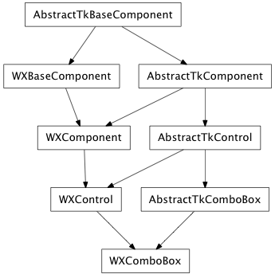

Bases: enaml.widgets.control.Control
A drop-down list from which one item can be selected at a time.
Use a combo box to select a single item from a collection of items. To select multiple items from a collection of items use a ListBox.
The combo box works by first using the to_string callable to convert the value and the list of items into strings for display and then using the index of the combo box to make appropriate selections.
Note
The objects that compose the collection.
The currently selected item from the collection. If this value is set to a value that is not in items then the computed index will be -1.
The integer index of the current selection in items. If the index is out of range of items then the index it is set to -1, and the current value is left unchanged.
A callable which will convert the objects in the items list to strings for display. Defaults to str.
A readonly property that holds the component items as a list of strings that are produced by the to_string attribute.
Fired when a new selection is made by the user through the ui, but not when changed programatically. The args object will contain the selected value.
How strongly a component hugs it’s contents’ width. ComboBoxes hug width weakly, by default.
Overridden parent class trait

Bases: enaml.widgets.qt.qt_control.QtControl, enaml.widgets.combo_box.AbstractTkComboBox
A Qt implementation of ComboBox.
Use a combo box to select a single item from a collection of items.
The change handler for the ‘index’ attribute on the shell object.

Bases: enaml.widgets.wx.wx_control.WXControl, enaml.widgets.combo_box.AbstractTkComboBox
A wxPython implementation of ComboBox.
Use a combo box to select a single item from a collection of items.
The change handler for the ‘_index’ attribute on the enaml shell.